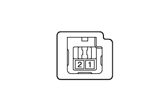

DTC B2780 Неисправность выключателя разблокировки ключа / нажимного переключателя |
| Код DTC | Условие обнаружения DTC | Неисправный участок |
| B2780 | Выключатель разблокировки ключа не находится в состоянии включения, когда замок зажигания установлен в положение ON (ВКЛ). |
|
| 1.УДАЛИТЕ DTC |
Сбросьте коды DTC (Нажмите здесь).
| ДАЛЕЕ | |
| 2.ПРОВЕРЬТЕ DTC |
Проверьте коды DTC (Нажмите здесь).
|
| ||||
| OK | ||
| ||
| 3.ПРОВЕРЬТЕ ВЫКЛЮЧАТЕЛЬ РАЗБЛОКИРОВКИ КЛЮЧА В СБОРЕ |
|  |
Снимите выключатель разблокировки ключа (Нажмите здесь).
Измерьте сопротивление в соответствии со значениями, приведенными в таблице ниже.
| Контакты для подключения диагностического прибора | Положение переключателя | Заданные условия |
| 1 - 2 | Нажат | Менее 1 Ом |
| Не нажат | 10 кОм или более |
|
| ||||
| OK | |
| 4.ПРОВЕРЬТЕ ЖГУТ ПРОВОДОВ И РАЗЪЕМ (ВЫКЛЮЧАТЕЛЬ РАЗБЛОКИРОВКИ КЛЮЧА - ЭБУ ЭЛЕКТРОННОГО КЛЮЧА ЗАЖИГАНИЯ И МАССА) |
Отсоедините разъем выключателя G3.
Отсоедините разъем G138*1 или G74*2 ЭБУ.
Измерьте сопротивление в соответствии со значениями, приведенными в таблице ниже.
| Контакты для подключения диагностического прибора | Условие | Заданные условия |
| G138-3 (KSW) - G3-1 | Всегда | Менее 1 Ом |
| G138-3 (KSW) или G3-1 - масса | Всегда | 10 кОм или более |
| G3-2 - масса | Всегда | Менее 1 Ом |
| Контакты для подключения диагностического прибора | Условие | Заданные условия |
| G74-3 (KSW) - G3-1 | Всегда | Менее 1 Ом |
| G74-3 (KSW) или G3-1 - масса | Всегда | 10 кОм или более |
| G3-2 - масса | Всегда | Менее 1 Ом |
|
| ||||
| OK | ||
| ||